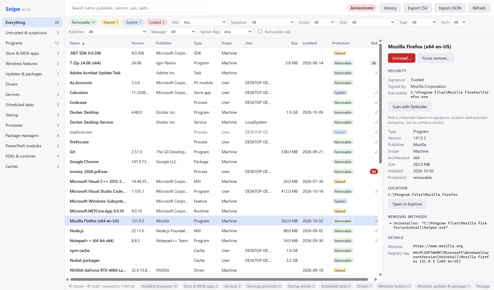
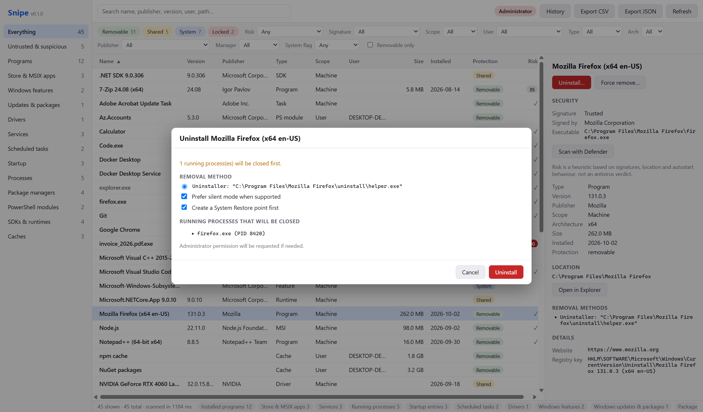
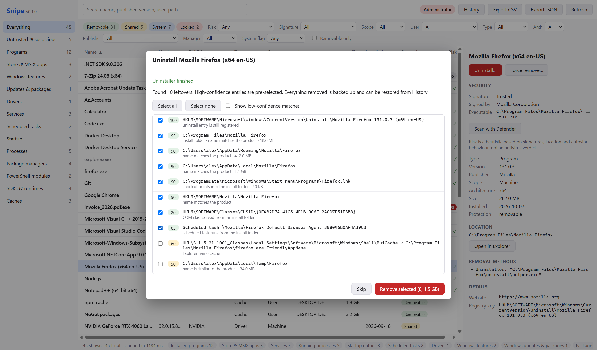
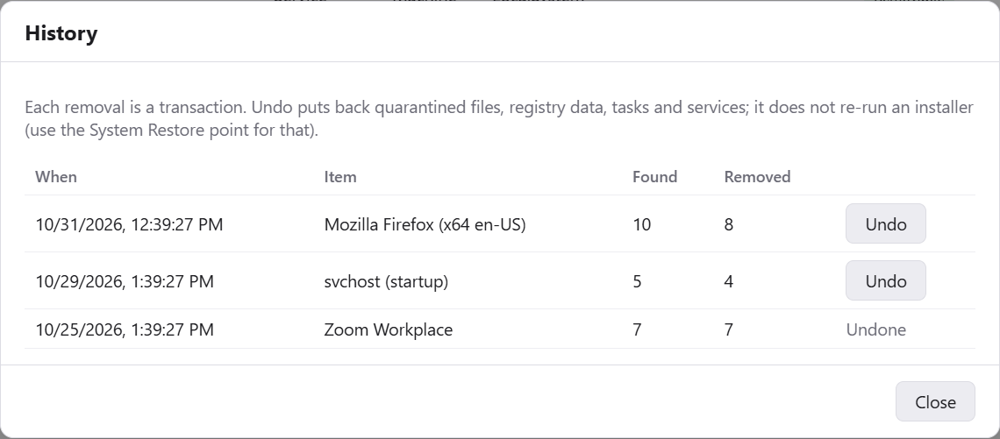
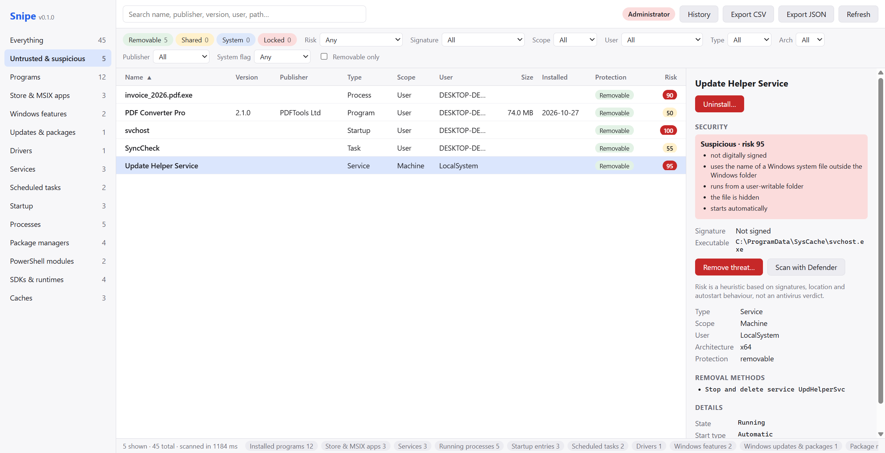
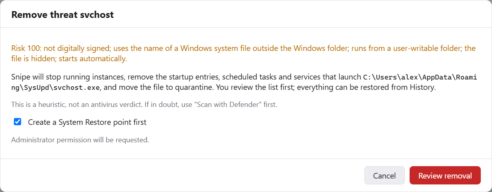
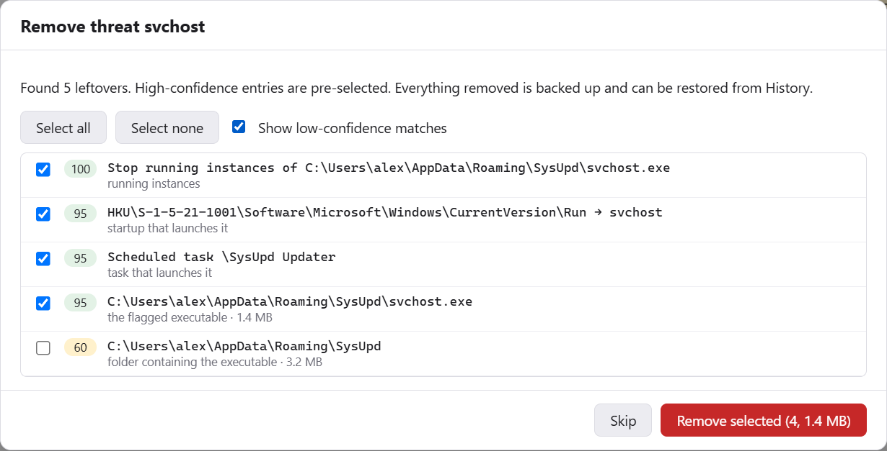

Complete inventory
Programs, MSI products, Store apps, Windows features & updates, drivers, services, scheduled tasks, startup entries and running processes.
Snipe lists everything installed on your PC, from programs and Store apps to drivers, services, startup entries, packages and SDKs. It flags software you shouldn't trust and removes things completely, leftovers included, with backups and one-click undo.
x64 & x86 installers · about 3.5 MB · MIT OR Apache-2.0

Snipe reads the same sources Windows uses, in parallel, and shows them in one fast, searchable list.
Programs, MSI products, Store apps, Windows features & updates, drivers, services, scheduled tasks, startup entries and running processes.
npm, pip, cargo, Chocolatey, Scoop and dotnet tools, PowerShell modules, and .NET, Python, Java, Rust, Node, Windows and Android SDKs, plus developer caches with their sizes.
Checks digital signatures and spots warning signs: fake system file names, temp-folder executables, double extensions, hidden autostarts.
Runs the vendor's uninstaller, then finds the folders, registry keys, shortcuts, services and tasks left behind, scored by confidence.
Files are quarantined and registry data is exported before anything is deleted. Every removal can be undone from History.
Narrow down by protection level, risk, signature, scope, user, type, architecture, publisher or package manager, with instant search.
Click a tab to see each part of the app. Click any screenshot to view it full size.
Four steps. Nothing is removed until you've seen exactly what will happen.
Snipe opens instantly from its cache and refreshes in a few seconds, with results streaming in as each source finishes. Pick a category on the left, type in the search box, or combine filters.
Uninstall… shows what will happen first: the removal method, running processes that will be closed, and any warnings about shared components.

After the uninstaller finishes, Snipe searches for what it left behind and scores every finding. High-confidence items are pre-selected; the rest are yours to decide.

Selected leftovers are backed up, then removed. Changed your mind? Open History and click Undo to put back the files, registry data, tasks and services Snipe removed.

Snipe verifies the digital signature of every program, process, service, startup entry and scheduled task, including Windows catalog signatures, and looks for the tricks malware commonly uses. Everything that scores 40 or more appears under Untrusted & suspicious.

Remove threat… stops the running copies, removes every startup entry, scheduled task and service that launches the file, and moves the file to quarantine, all reviewable and undoable.

Scan with Defender asks Microsoft Defender for a verdict on that single file without changing anything. Risk scores are heuristics, not an antivirus verdict.

Deleting things with administrator rights is serious. Snipe is careful by design.
Snipe_<version>_x64-setup.exe (or _x86 for 32-bit Windows)
from Releases.
Installers aren't code-signed yet, so Windows SmartScreen may ask you to confirm with More info → Run anyway.
Download latest releaseCommand-line interface
snipe-cli scan # summary per source
snipe-cli list chrome # items matching "chrome"
snipe-cli threats # untrusted / suspicious items
snipe-cli plan <id> # uninstall plan, no changes
snipe-cli leftovers <id> # dry-run leftover scan
snipe-cli export --format csv --out inventory.csvBuild from source
# Rust (rustup), VS Build Tools (C++), Node.js 20+
git clone https://github.com/arteficent/snipe.git
cd snipe/app
npm ci
npm run tauri dev # run with hot reload
npm run tauri build -- --bundles nsis # installerNo. Snipe flags software that lacks a trusted signature or behaves like common malware persistence so you can review it. It can't detect validly signed or well-disguised malware. Use “Scan with Defender” or your antivirus for a verdict.
Browsing doesn't. Uninstalling, cleaning leftovers, History and scanning Windows features ask for permission once per session through the normal Windows UAC prompt.
Open History and click Undo: quarantined files, registry data, scheduled tasks and services are put back. To roll back an uninstaller itself, use the System Restore point Snipe can create first.
Windows components are shown but locked, and Windows folders and critical registry keys are on a hard deny-list. Windows features and updates are only changed through Microsoft's own DISM tool, and only when you ask.
No. Snipe works entirely offline; signature checks don't use the network.